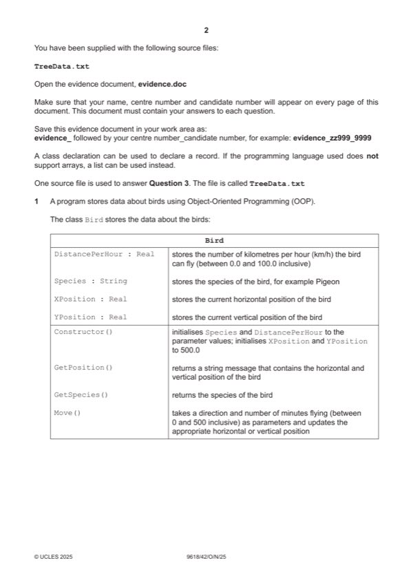

Question 1

Original paper page 2
Part 1(a)(i) — solution
- Class header (and end)
- 4 private attributes with correct data types
- Constructor header (and end) taking 2 parameters within class …
- … within constructor assigning parameters to Species and DistancePerHour and assigning 500.0 to XPosition
Visual Basic (VB.NET)
Class Bird
Private Species As String
Private DistancePerHour As Single
Private XPosition As Single
Private YPosition As Single
Sub New(pDistancePerHour, pSpecies)
Species = pSpecies
DistancePerHour = pDistancePerHour
XPosition = 500.0
YPosition = 500.0
End Sub
End Class
University Press & Assessment 2025 Page 6 of 38
9618/42 Cambridge International AS & A Level – Mark Scheme October/November 2025
Mark points
- Class header (and end)
- 4 private attributes with correct data types
- Constructor header (and end) taking 2 parameters within class …
- … within constructor assigning parameters to Species and DistancePerHour and assigning 500.0 to XPosition
Part 1(a)(i) — solution
- self.__Species = pSpecies #string
- self.__DistancePerHour = pDistancePerHour #real
- self.__XPosition = 500.0 #real
- self.__YPosition = 500.0 #real
Python
class Bird:
def __init__(self, pDistancePerHour, pSpecies):
self.__Species = pSpecies #string
self.__DistancePerHour = pDistancePerHour #real
self.__XPosition = 500.0 #real
self.__YPosition = 500.0 #real
Mark points
- self.__Species = pSpecies #string
- self.__DistancePerHour = pDistancePerHour #real
- self.__XPosition = 500.0 #real
- self.__YPosition = 500.0 #real
Part 1(a)(ii) — solution
- Get method header (and end) with no parameter …
- … returning Species
Visual Basic (VB.NET)
Function GetSpecies()
Return Species
End Function
Python
def GetSpecies(self):
return self.__Species
University Press & Assessment 2025 Page 7 of 38
9618/42 Cambridge International AS & A Level – Mark Scheme October/November 2025
Mark points
- Get method header (and end) with no parameter …
- … returning Species
Part 1(a)(iii) — solution
- Get method header (and end) with no parameter, returning a value
- Creating correct string using attributes …
- … returning this string
Visual Basic (VB.NET)
Function GetPosition()
Dim ReturnValue As String = "X = " & XPosition & " Y = " & YPosition
Return ReturnValue
End Function
Python
def GetPosition(self):
ReturnValue = "X = " + str(self.__XPosition) + " Y = " + str(self.__YPosition)
return ReturnValue
University Press & Assessment 2025 Page 8 of 38
9618/42 Cambridge International AS & A Level – Mark Scheme October/November 2025
Mark points
- Get method header (and end) with no parameter, returning a value
- Creating correct string using attributes …
- … returning this string
Part 1(a)(iv) — solution
- Method header (and end) taking direction and minutes flying as parameters
- Calculation of distance using minutes flying parameter and attribute DistancePerHour
- Selection based on direction parameter …
- … north adding to YPosition and south subtracting from YPosition
- … east adding to XPosition and west subtracting from XPosition
Mark points
- Method header (and end) taking direction and minutes flying as parameters
- Calculation of distance using minutes flying parameter and attribute DistancePerHour
- Selection based on direction parameter …
- … north adding to YPosition and south subtracting from YPosition
- … east adding to XPosition and west subtracting from XPosition
Part 1(a)(iv) — solution
- If Direction = "E" Then
- XPosition = XPosition + ((DistancePerHour / 60) * MinsFlying)
- ElseIf Direction = "W" Then
- XPosition = XPosition - ((DistancePerHour / 60) * MinsFlying)
- ElseIf Direction = "N" Then
- YPosition = YPosition + ((DistancePerHour / 60) * MinsFlying)
- ElseIf Direction = "S" Then
- YPosition = YPosition - ((DistancePerHour / 60) * MinsFlying)
- if Direction == "E":
- self.__XPosition = self.__XPosition + ((self.__DistancePerHour/60)*MinsFlying)
- elif Direction == "W":
- self.__XPosition = self.__XPosition - ((self.__DistancePerHour/60)*MinsFlying)
- elif Direction == "N":
- self.__YPosition = self.__YPosition + ((self.__DistancePerHour/60)*MinsFlying)
- elif Direction == "S":
- self.__YPosition = self.__YPosition - ((self.__DistancePerHour/60)*MinsFlying)
Visual Basic (VB.NET)
Function Move(Direction, MinsFlying)
If Direction = "E" Then
XPosition = XPosition + ((DistancePerHour / 60) * MinsFlying)
ElseIf Direction = "W" Then
XPosition = XPosition - ((DistancePerHour / 60) * MinsFlying)
ElseIf Direction = "N" Then
YPosition = YPosition + ((DistancePerHour / 60) * MinsFlying)
ElseIf Direction = "S" Then
YPosition = YPosition - ((DistancePerHour / 60) * MinsFlying)
End If
End Function
Python
def Move(self, Direction, MinsFlying):
if Direction == "E":
self.__XPosition = self.__XPosition + ((self.__DistancePerHour/60)*MinsFlying)
elif Direction == "W":
self.__XPosition = self.__XPosition - ((self.__DistancePerHour/60)*MinsFlying)
elif Direction == "N":
self.__YPosition = self.__YPosition + ((self.__DistancePerHour/60)*MinsFlying)
elif Direction == "S":
self.__YPosition = self.__YPosition - ((self.__DistancePerHour/60)*MinsFlying)
University Press & Assessment 2025 Page 10 of 38
9618/42 Cambridge International AS & A Level – Mark Scheme October/November 2025
Mark points
- If Direction = "E" Then
- XPosition = XPosition + ((DistancePerHour / 60) * MinsFlying)
- ElseIf Direction = "W" Then
- XPosition = XPosition - ((DistancePerHour / 60) * MinsFlying)
- ElseIf Direction = "N" Then
- YPosition = YPosition + ((DistancePerHour / 60) * MinsFlying)
- ElseIf Direction = "S" Then
- YPosition = YPosition - ((DistancePerHour / 60) * MinsFlying)
- if Direction == "E":
- self.__XPosition = self.__XPosition + ((self.__DistancePerHour/60)*MinsFlying)
- elif Direction == "W":
- self.__XPosition = self.__XPosition - ((self.__DistancePerHour/60)*MinsFlying)
- elif Direction == "N":
- self.__YPosition = self.__YPosition + ((self.__DistancePerHour/60)*MinsFlying)
- elif Direction == "S":
- self.__YPosition = self.__YPosition - ((self.__DistancePerHour/60)*MinsFlying)
Part 1(b) — solution
- Cockatiel 71.0 instance of Bird created …
- Macaw 56.0 instance of Bird created …
- … both stored in variables/structures
Visual Basic (VB.NET)
Dim FirstBird As Bird = New Bird(71.0, "Cockatiel")
Dim SecondBird As Bird = New Bird(56.0, "Macaw")
Python
FirstBird = Bird(71.0, "Cockatiel")
SecondBird = Bird(56.0, "Macaw")
University Press & Assessment 2025 Page 11 of 38
9618/42 Cambridge International AS & A Level – Mark Scheme October/November 2025
Mark points
- Cockatiel 71.0 instance of Bird created …
- Macaw 56.0 instance of Bird created …
- … both stored in variables/structures
Part 1(c)(i) — solution
- Output species, X and Y position for both Bird objects in appropriate messages(s)
- Prompt and input of bird choice, time and direction …
- … validating all three inputs …
- … looping until all three are valid
- Calling Move() for chosen bird …
- … with only input direction and input time as arguments
- Outputting new position for the bird moved
- Using get methods throughout where appropriate
Mark points
- Output species, X and Y position for both Bird objects in appropriate messages(s)
- Prompt and input of bird choice, time and direction …
- … validating all three inputs …
- … looping until all three are valid
- Calling Move() for chosen bird …
- … with only input direction and input time as arguments
- Outputting new position for the bird moved
- Using get methods throughout where appropriate
Part 1(c)(i) — solution
- Valid = true;
- Direction = scanner.nextLine().toUpperCase();
- if(Direction.compareTo("NORTH") == 0 || Direction.compareTo("N") == 0){
- if(Choice == 1){
- } else if(Direction.compareTo("SOUTH")== 0 || Direction.compareTo("S") == 0){
- if(Choice == 1){
- } else if(Direction.compareTo("EAST")== 0 || Direction.compareTo("E") == 0){
- if(Choice == 1){
- } else if(Direction.compareTo("WEST")== 0 || Direction.compareTo("W") == 0){
- if(Choice == 1){
- Valid = false;
- Choice = 0
- Choice = Console.ReadLine
- Time = -1
- Time = Console.ReadLine
- Dim Valid As Boolean = False
- While (Valid = False)
- Valid = True
- Direction = Console.ReadLine().ToUpper
- If Direction = "NORTH" Or Direction = "N" Then
Visual Basic (VB.NET)
Dim Choice As Integer
Dim Time As Integer
Dim Direction As String
Choice = 0
While Choice <> 1 And Choice <> 2
Console.WriteLine("Which bird do you want to move")
Console.WriteLine("Enter 1 for " & FirstBird.GetSpecies() & " is currently at " &
FirstBird.GetPosition())
Console.WriteLine("Enter 2 for " & SecondBird.GetSpecies() & " is currently at " &
SecondBird.GetPosition())
Choice = Console.ReadLine
End While
Time = -1
While Time < 0 Or Time > 500
Console.WriteLine("To the nearest minute how long has the bird been flying ")
Time = Console.ReadLine
End While
Dim Valid As Boolean = False
While (Valid = False)
Valid = True
Console.WriteLine("Which direction has the bird been flying, North, South, East or West
")
Direction = Console.ReadLine().ToUpper
If Direction = "NORTH" Or Direction = "N" Then
If Choice = 1 Then
FirstBird.Move("N", Time)
Else
SecondBird.Move("N", Time)
End If
University Press & Assessment 2025 Page 14 of 38
9618/42 Cambridge International AS & A Level – Mark Scheme October/November 2025
Mark points
- Valid = true;
- Direction = scanner.nextLine().toUpperCase();
- if(Direction.compareTo("NORTH") == 0 || Direction.compareTo("N") == 0){
- if(Choice == 1){
- } else if(Direction.compareTo("SOUTH")== 0 || Direction.compareTo("S") == 0){
- if(Choice == 1){
- } else if(Direction.compareTo("EAST")== 0 || Direction.compareTo("E") == 0){
- if(Choice == 1){
- } else if(Direction.compareTo("WEST")== 0 || Direction.compareTo("W") == 0){
- if(Choice == 1){
- Valid = false;
- Choice = 0
- Choice = Console.ReadLine
- Time = -1
- Time = Console.ReadLine
- Dim Valid As Boolean = False
- While (Valid = False)
- Valid = True
- Direction = Console.ReadLine().ToUpper
- If Direction = "NORTH" Or Direction = "N" Then
Part 1(c)(i) — solution
- ElseIf Direction = "SOUTH" Or Direction = "S" Then
- If Choice = 1 Then
- ElseIf Direction = "EAST" Or Direction = "E" Then
- If Choice = 1 Then
- ElseIf Direction = "WEST" Or Direction = "W" Then
- If Choice = 1 Then
- Valid = False
- Choice = 0
- while Choice != 1 and Choice != 2:
- Choice = -1
Python
Choice = 0
while Choice != 1 and Choice != 2:
print("Which bird do you want to move")
print("Enter 1 for", FirstBird.GetSpecies(), "is currently at",
FirstBird.GetPosition())
Choice = -1
print("Enter 2 for", SecondBird.GetSpecies(), "is currently at",
SecondBird.GetPosition())
University Press & Assessment 2025 Page 15 of 38
9618/42 Cambridge International AS & A Level – Mark Scheme October/November 2025
Mark points
- ElseIf Direction = "SOUTH" Or Direction = "S" Then
- If Choice = 1 Then
- ElseIf Direction = "EAST" Or Direction = "E" Then
- If Choice = 1 Then
- ElseIf Direction = "WEST" Or Direction = "W" Then
- If Choice = 1 Then
- Valid = False
- Choice = 0
- while Choice != 1 and Choice != 2:
- Choice = -1
Part 1(c)(i) — solution
- Choice = int(input())
- Time = -1
- Time = int(input("To the nearest minute how long has the bird been flying "))
- Valid = False
- while Valid == False:
- Valid = True
- Direction = input("Which direction has the bird been flying, North, South, East or West
- if Direction == "NORTH" or Direction == "N":
- if Choice == 1:
- elif Direction == "SOUTH" or Direction == "S":
- if Choice == 1:
- elif Direction == "EAST" or Direction == "E":
- if Choice == 1:
- elif Direction == "WEST" or Direction == "W":
- if Choice == 1:
- Valid = False
Mark points
- Choice = int(input())
- Time = -1
- Time = int(input("To the nearest minute how long has the bird been flying "))
- Valid = False
- while Valid == False:
- Valid = True
- Direction = input("Which direction has the bird been flying, North, South, East or West
- if Direction == "NORTH" or Direction == "N":
- if Choice == 1:
- elif Direction == "SOUTH" or Direction == "S":
- if Choice == 1:
- elif Direction == "EAST" or Direction == "E":
- if Choice == 1:
- elif Direction == "WEST" or Direction == "W":
- if Choice == 1:
- Valid = False
Part 1(c)(ii) — solution
- screenshot showing inputs for one test with correct output
- screenshot showing inputs for a second test with correct output
- screenshot showing inputs for a third and fourth test with correct output
Mark points
- screenshot showing inputs for one test with correct output
- screenshot showing inputs for a second test with correct output
- screenshot showing inputs for a third and fourth test with correct output